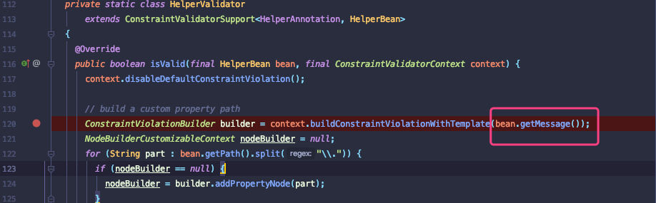
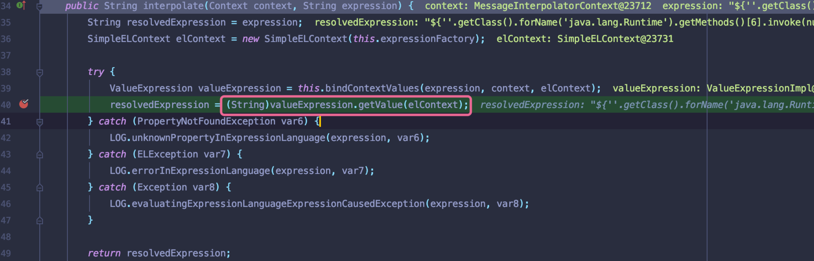
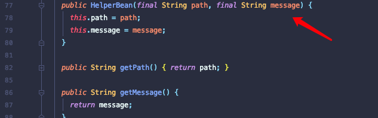
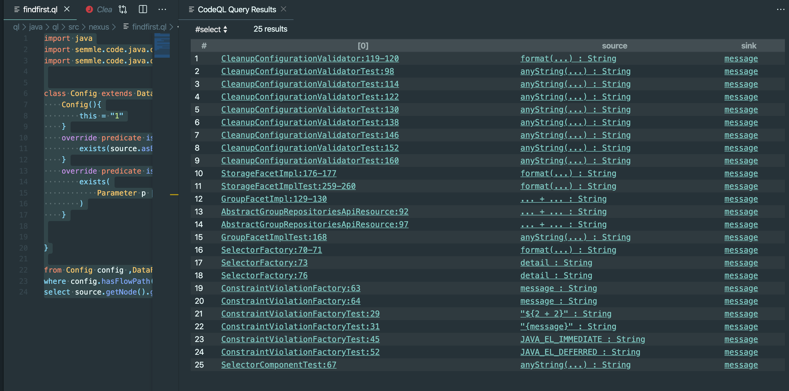
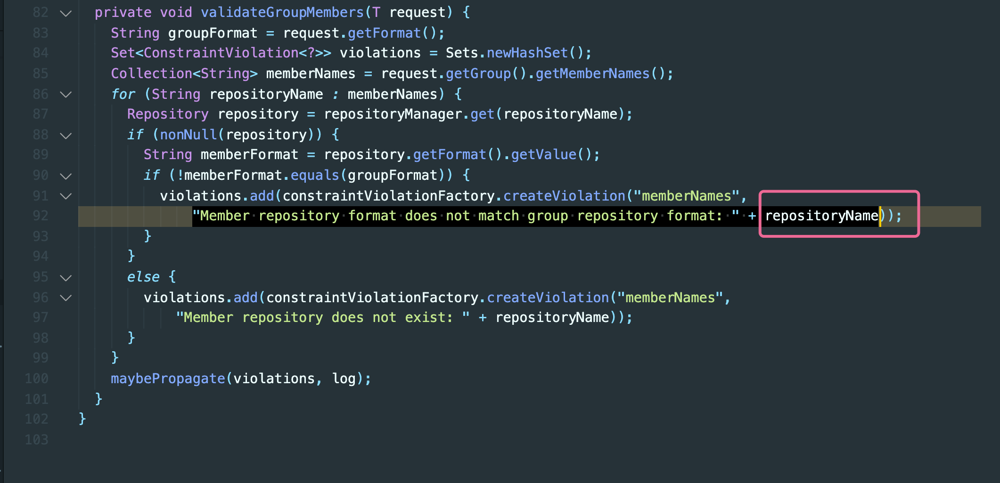
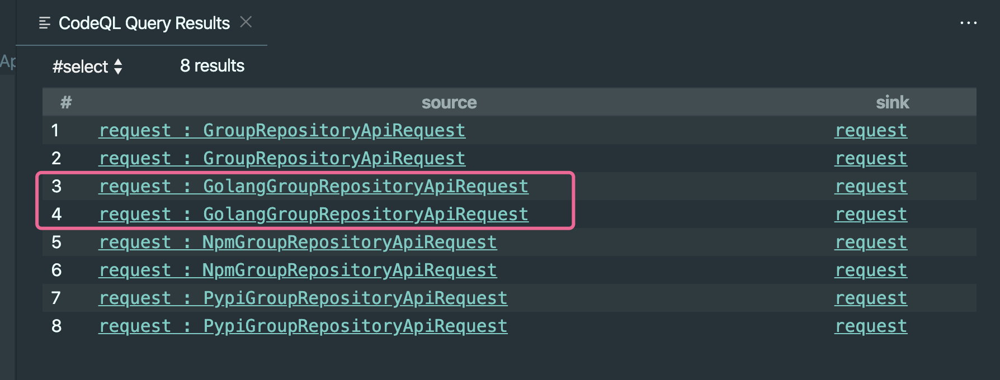
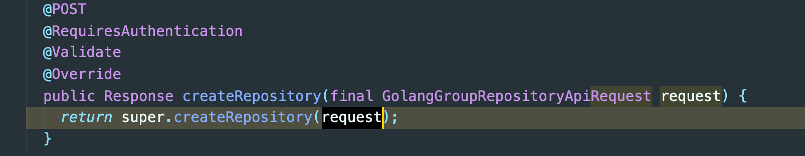

前言
文章首发安全客：https://www.anquanke.com/post/id/196364
挖掘Java漏洞时候存在一个痛点在已知漏洞点的情况下，如何找到可控点，以及确定一条具体的数据流.
前几天看到@Alvaro Muñoz 利用codeql挖掘到[CVE-2020-10199]Nexus Repository Manager远程代码执行漏洞.于是就对codeql产生强累的好奇心,怼了几天codeql语法和CVE案例。抠出挖掘该CVE的Ql代码
Codeql
对Codeql具体介绍可以参考：https://help.semmle.com/
使用codeql能够很明确搜索出方法调用的数据流, QL代码编写思路相当于在一个代码数据库中利用编写的逻辑搜索出可能的调用点。重点是确定Souce和Sink搜索逻辑.
漏洞原理简要分析
该漏洞是由于未做过滤造成表达式注入,作者确定漏洞点执行函数buildConstraintViolationWithTemplate,其该方法中bean.getMessage()返回结果message并未使用stripJavaEl方法过滤造成表达式注入

最后调用org.hibernate.validator.internal.engine.messageinterpolation#interpolate,执行插入操作并解析恶意字符串，造成表达式注入.

HelperBean bean#message
编写Codeql最重要的是先确定数据流的Sink点即污染点字段.这里跟进org.sonatype.nexus.validation.HelperBean#getMessage方法.返回message值.该值经由HelperBean方法传入

Ql代码
这里直接给出代码并做简单讲解：搜索出流经HelperBean方法中message字段的数据流
isSink方法搜索逻辑: 定义参数p,该参数p由被调用的HelperBean方法使用且该p参数名为message
isSouce方法搜索逻辑：由于不清楚哪里数据源最终经过该sink，所以直接使用source.asExpr()调用所有可能的表达式作为数据流.
1 | import java |
搜索结果
Run Query

AbstractGroupRepositoriesApiResource#validateGroupMembers
根据搜索结果，这里最可疑的souce就是AbstractGroupRepositoriesApiResource:92.点击该结果跟进，Codeql很友好对污染点respositoryName进行标记。向上溯源得到respositoryName值最终由request中获取.

Ql代码
现在就是需要确定AbstractGroupRepositoriesApiResource#validateGroupMembers()方法由哪里调用.
isSink方法搜索逻辑：定义参数p,该参数p由被调用的validateGroupMembers方法使用且该p参数名为request
isSouce方法搜索逻辑：这里souce原本是用Codeql自带RemoteFlowSource获取，但是发现并没有结果。所以这里直接用souce.asExpr()搜索全局表达式。
1 | import java |
搜索结果
Run Query

其中GolangGroupRepositoriesApiResource就是该CVE调用的可控点.

参考链接
https://help.semmle.com/wiki/display/CBJAVA/Override+of+method
https://help.semmle.com/QL/ql-explore-queries.html
https://help.semmle.com/qldoc/java/
https://www.youtube.com/watch?v=irrYp3wdtsw
https://securitylab.github.com/advisories/GHSL-2020-011-nxrm-sonatype